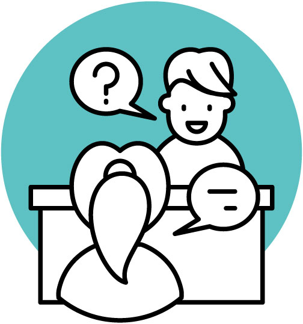
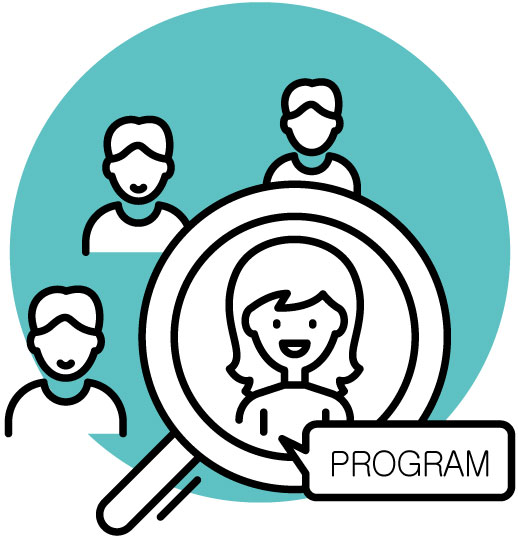

SOONGSIL PLAYGROUND
SSU:PECIALIST
SSU COLLEGE
ABOUT SSU
취업 프로그램
인재개발을 위한 취업 밀착 프로그램
숭실대학교는 학생이 입학함과 동시에 지도교수를 배정해, 진로와 취 업을 지도하는 진로지도교수제도를 시행하고 있습니다.
숭실 인재들이 입증한 내실있는 성과
64.4%
전국 4년제
2019년 평균 취업률
69.7%
숭실대학교 2019년 취업률
STEP1
진로지도교수 상담제도
숭실대 학생이라면 누구나 지도교수와 상담을 진행하게 된다. 매학기 최소 1회 이상 지도교수와의 정기적인 상담을 통하여 학생들은 다양한 진로를 탐색할 수 있으며, 학업과 장래에 필요한 부분을 준비할 수 있다.
STEP2
취업동문 멘토링
졸업 후 직장에 근무하고 있는 선배가 멘토가 되고, 그 선배의 멘티가 되고 싶은 학생을 모집해 멘토링 프로그램을 진행하고 있다. 이를 통해 학생들은 선배 멘토들로부터 생생한 현장 이야기를 들을 수 있다.
STEP3
체계적인 역량강화 프로그램
1학년부터 4학년까지 단계별 역량강화 프로그램이 마련되어있다. 학년별 정규 취업 교과목이 있으며, 4학년까지 수강하면서 포트폴리오 만들기에 도움을 받을 수 있다. 취업은 자신의 적성을 파악하고 목표를 이뤄가는 과정이 중요하므로 저학년 때부터 차근차근 준비하는 것이 좋다.
현장 실습 프로그램
국내단기(4주·8주) | 국내장기(16주 이상)
산업현장에서 실습 기회를 제공해 취업 희망 업종 및 직무에 대한 이해도를 높임
해외인턴십
학기 초 지원자를 모집해 운영(학교지원금 지원)함
2학년 이상 재·휴학생, 편입생 1학기 이상 이수자 지원 가능
취업 교육 프로그램
취업 캠프
취업 마인드 형성 및 정보 제공을 위한 프로그램
직무 교육
영업, 마케팅, 인사, 전략기획, 유통, 서비스, 금융 등 각 직무의 이해를 넓히는 집중 교육
SSCAP+ / SSCCEP+
진로탐색 및 취업역량 강화를 위한 진로 취업 집중 교육
취업 지원 프로그램
입사서류, 면접, 이미지 클리닉
기업 입사 준비를 돕는 관련 클리닉을 상시 운영
취업성공사례 수기집 제작
취업에 성공한 선배와 재학생들의 수기를 공모해 정보 제공
취업준비 지원
공통의 취업 목표 달성을 위해 학생들이 자율적으로 구성한 취업 공동체 활동 지원
직무 교육
기업에서 실시하는 모의직무능력검사 및 해설 강의를 지원
1:1상시상담 및 취업 정보 자료 제공
취업지원관(대기업 임원 경력 산학협력중점교원 포함)과 1:1 상시 상담 및 선배의 취업 현황 통계자료 상시 열람 가능
취업, 아르바이트, 기업 추천 정보 제공
학교로 접수되는 모든 정보는 경력개발시스템(job.ssu.ac.kr)에 공개
채용설명회 및 상담회
기업에서 학생 리쿠르팅 기간 동안 채용설명회와 상담회를 실시하여 학생과 기업 간 만남 주선